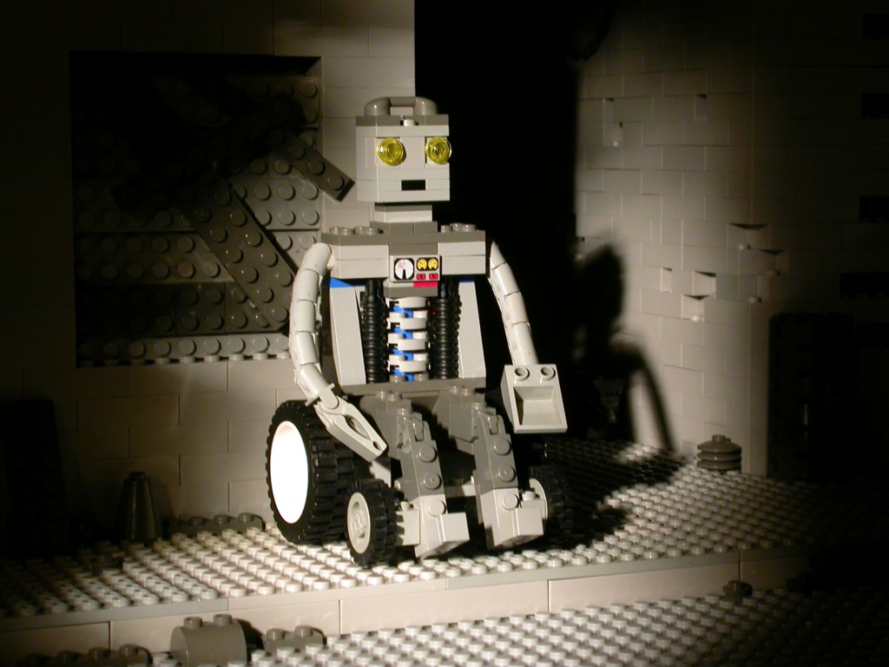
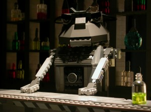

“ROBOTA” by Marc Beurteaux (2005)
I’ve been experimenting with animation and film making for a long time now. As a kid, I was first inspired by things like The Muppets, Wallace and Gromit, Star Wars, and anything from Will Vinton Studios. These classic creations piqued my interest in stop-motion, sculpture, character animation, and general weirdness. I started pursuing these interests using the medium I knew best — LEGO bricks.
As my study of these things continued into college, I struggled with whether or not to make my thesis film a LEGO film. Was it practical? Would audiences see it as a gimmick? Could it even be done? Fortunately, I was able to find a few prior examples of fantastic, minifig-free brick animation, which solidified my decision and helped inspire me further. One of these films was “ROBOTA” by Marc Beurteaux.
Story
(Spoilers to follow.)

ROBOTA tells the story of, well, Robota; a wheelchair-bound automaton wandering through a futuristic, grey-scale city. Robota dreams of having her legs repaired, but can’t afford to; so she bets her panhandled cash on a robot cockfight. Eventually, Robota makes her way to a somewhat eccentric robot hospital, where her dream of getting new legs comes true… sort of.
Design
The world of ROBOTA is well-defined from the get-go, starting with some great establishing shots of the bleak, mechanical city. The lighting is stark and moody, adding to the atmosphere, and a few of the vehicles and sets have some neat built-in lighting.
The character designs in ROBOTA are really clever. Even though 95% of the ‘bots are built completely in grey, they each have a uniqueness, and feature plenty of NPU. Look for the guy with a boxing bell for a head, the one-legged droid on crutches, and the bartender’s SNOT noggin. (Also, who knew robots could have nipples?)
In fact, the grey color scheme of the robot characters is used to great advantage at many points in the film, particularly when color comes into play at the cockfight. Each of the robot birds has a distinct color scheme, and since there is no dialogue in the film, the betting on the fights is conveyed through the use of colored tickets used by the characters. A fight between blue and yellow robot birds stands out all the more when contrasted with a grey robot audience.
Animation
The animation in ROBOTA is impressive. There’s lots of great subtlety from each of the characters, especially Robota herself. Her arms are Classic Space arm pieces, giving her gestures flexibility and variety.
The secondary robot characters are well-animated, too. What’s nice is that, for the most part, these background ‘bots are rigged only to be able to accomplish what’s needed for the shot — whether it’s reacting, fighting, or just subtle head turns. On the film’s commentary track, director Marc Beurteaux talks about how the characters were rigged with the intent of solving every animation problem in the simplest way possible, and it shows.
The robot birds are pretty sweet, and despite having click-jointed legs, they seem to move with a great fluidity and style. The flying shots of them are well done, with supports being hidden as opposed to masked out in post-production (impressive!).
There are a couple of post-production visual effects in the film, but none of them really stand out or feel poorly integrated (except maybe for one breaking bottle). The film is primarily a stop-motion piece, and there are some great in-camera panning and trucking shots, which are simple but well-executed.
Sound
The sound design for ROBOTA works in much the same way — it’s simple, effective, and serves the film well. There’s enough of a variety of robot droning, buzzing, and beeping to make Ben Burtt proud.
For the most part, the music is also electronic sounding, save for the finale song “Hooray, Hooray!” by Pat Bowman. It’s a more melodic, almost musical theater sounding piece (apparently, at one point, this film was supposed to end with a dance number). While tonally different, it still somehow fits the mood of the overall film, and ends things on a lighthearted note.
Overall
ROBOTA has one of the traits that I believe any LEGO animated film should have — that it would have been a great film whether it was made using LEGO bricks or not. ROBOTA creates an immersive world, tells an engaging story, and is totally worth repeated viewings to catch all the creative details.
Plus, it’s got robots. I can’t recommend it enough.
Where to watch this film
ROBOTA made the festival rounds in the mid-2000s, winning a few awards in the process:
- Best Canadian Film, Resfest 2005
- Outstanding Achievement Award, New Haven Underground Film Festival, 2006
- Best Art Direction, Chicago Short Film Festival, 2006
ROBOTA used to be available on DVD via robotafilm.com, but it appears that website is no longer in existence. It is available to view on YouTube.
Marc Beurteaux’s website also seems to have disappeared, though you can still view a few of his blog entries on the WILDsound Film Festival website.
Leave a Reply
You must be logged in to post a comment.